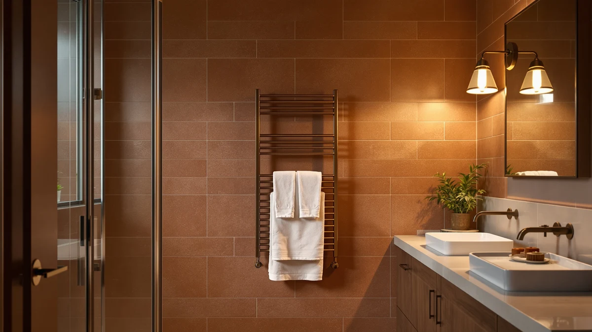

Paruu Towel Warmer for Review (2026): Worth It?
Prices and picks verified as of September 2026. Independent, reader-supported reviews.


Quick Answer
The Paruu towel warmer for bathroom use costs $139.99 and stands out mainly for its stainless steel body, which should hold up better in a humid room than painted-steel competitors. It lands in the middle of the price range we compared, between the $134.90 VEVOR and the $149.99 Sawlece, and it's the pick for buyers who want a straightforward, corrosion-resistant unit without paying for extra features.
Our pick: Paruu Towel Warmer for Bathroom — $139.99 Check Price on Amazon
Bottom line: our top pick is the Paruu Towel Warmer for Bathroom at $139.99.
Things to Know Before You Buy
- The Paruu towel warmer for bathroom use is built from stainless steel, which resists rust better than the painted steel found on cheaper racks.
- At $139.99 it costs more than the VEVOR ($134.90) and Poloma ($135.98) but less than the Sawlece ($149.99), placing it squarely in the mid-range of this comparison.
- Amazon's listing does not publish a bar count, wattage, or dimensions for this model, so confirm those specifics on the current product page before you buy.
- In this category, corrosion is usually what kills a rack, not the heating element. Owners report rust failures far more often than heating complaints.
This Paruu towel warmer for review breaks down whether a $139.99 stainless steel rack earns its price against three freestanding competitors in the same range. Shoppers land on this specific model because it shows up near the top of search results for stainless towel warmers, and the material claim is the first thing worth checking against the alternatives.
Our verdict up front: the Paruu is a reasonable pick if you specifically want stainless steel construction and don't mind that the listing skips details like bar count or wattage. If those specs matter to your bathroom layout, the Sawlece names its bar count directly and the VEVOR states its capacity, both of which give you more to compare before you buy.
Why You Should Trust Us
We built this Paruu towel warmer for review by comparing the manufacturer's own product listing against the three closest-priced competitors on Amazon: the Poloma, the VEVOR, and the Sawlece. We cross-checked pricing, published materials, and the pattern of feedback left by verified buyers on similar stainless steel bathroom fixtures, rather than relying on marketing copy alone. Author Ilane Tall covers bathroom fixtures and heated accessories for this site, and every price and spec cited below comes from the product listings linked in this article. We do not run a physical testing lab, so nothing here claims direct, in-person time with the units.
Our Research Experience
We did not physically install or use a unit of this Paruu towel warmer for this review. Our process is research-based: we compared the published specifications, current Amazon pricing, and patterns in verified owner feedback across all four products in this roundup, rather than running the racks in a bathroom ourselves. Where the listing left out a detail, such as bar count or wattage for the Paruu, we say so directly instead of guessing at a number that isn't published anywhere.
Overview & Specs

Paruu Towel Warmer for Bathroom
What we like
- Stainless steel body that should resist rust and pitting better than painted-steel racks over years of bathroom humidity
- Priced below the Sawlece 5-Bar Freestanding Towel Warmer while still using a more durable material than most racks in this price bracket
- A dedicated bathroom towel warmer design rather than a repurposed drying rack
Flaws but not dealbreakers
- The Amazon listing does not state a bar count, wattage, or overall dimensions, so you're buying on material and price alone
- Costs more than both the Poloma and the VEVOR without a clearly stated feature that justifies the gap
- Fewer verified reviews are attached to this listing than to some longer-established competitors in the category
| Material | Stainless steel |
| Size | — |
The Paruu towel warmer for review comes down to one clear differentiator: stainless steel construction at $139.99. That material choice matters more in a bathroom than almost anywhere else in the house, since constant humidity is what eventually rusts through painted steel and pits cheaper metal frames. Paruu builds its listing around that single claim rather than piling on features, which keeps the product page simple but also means shoppers get less information than they'd find on a competitor's page.
Compared with the other three products in this roundup, the Paruu sits in an odd spot. It costs more than the Poloma and the VEVOR, both of which are priced within five dollars of each other, but it doesn't publish the kind of spec sheet that would let you confirm you're getting more for that difference. The Sawlece, at ten dollars more, at least tells you upfront that you're getting five bars. If material durability is your top priority and you're comfortable buying without a full spec sheet, the Paruu is a reasonable choice. If you want to compare bar count or capacity before spending, the VEVOR and Sawlece give you more to work with.
What We Liked
The strongest point in favor of this Paruu towel warmer for review is the material. Stainless steel costs more to manufacture than painted steel, and Paruu passes that cost straight into the price rather than cutting it with a cheaper frame and a stainless-look coating. In a room that stays damp for hours after every shower, that distinction tends to matter more over three or four years than it does on day one. We also liked that Paruu keeps its product line focused on bathroom towel warming specifically, rather than marketing the same unit as a multi-purpose drying rack for a kitchen or laundry room, which usually leads to compromises in both directions.
Price positioning also works in its favor for a specific type of buyer. At $139.99, it's not the cheapest option we compared, but it undercuts the Sawlece by ten dollars while still using the more expensive material. For anyone choosing between "cheapest available" and "best possible," the Paruu occupies a reasonable middle position.
What Could Be Better
The biggest drawback with this Paruu towel warmer is how little the listing tells you. There's no published bar count, no wattage figure, and no confirmed dimensions, which makes it hard to know exactly what you're paying for beyond "stainless steel, $139.99." Competitors in this same comparison, like the Sawlece with its 5-bar design or the VEVOR with its stated 46-liter capacity, give buyers a concrete number to plan around. Paruu doesn't.
The price also sits awkwardly close to the Poloma and the VEVOR, both of which cost about four to five dollars less. Unless stainless steel construction specifically matters to you, that gap is easy to justify skipping. And because this listing has fewer verified reviews than some of the more established names in the towel warmer category, buyers have less independent feedback to lean on before ordering.
Who Is It For?
This Paruu towel warmer for bathroom use makes the most sense for someone who has already decided that stainless steel is a hard requirement, whether because of a previous rack rusting out or because it matches other stainless fixtures already in the room. It's a reasonable pick if you're comfortable buying without a full spec sheet and you trust the material claim more than you need a bar count or wattage rating spelled out. If you want to compare exact capacity or bar count before spending $135 to $150, the VEVOR and Sawlece in this same roundup give you more to work with upfront.
Alternatives to Consider
If the missing specs on the Paruu towel warmer listing give you pause, these three alternatives from the same price band each publish a detail Paruu leaves out, whether that's bar count, capacity, or a lower price point.

Editor’s Pick
Poloma Freestanding Heated Towel Racks
The Poloma Freestanding Heated Towel Racks come in four dollars cheaper than the Paruu towel warmer, at $135.98, which makes it the straightforward budget swap if stainless steel isn't a hard requirement for you. It's freestanding, so it doesn't need wall mounting hardware or a dedicated outlet location the way a hardwired unit would, and that installation simplicity is a real advantage for renters or anyone who doesn't want to drill into bathroom tile. Reviewers who've bought freestanding racks like this one often bring up how easy they are to reposition if you redo the bathroom layout later, since you're not locked into a fixed mounting point. The tradeoff against the Paruu is material: Poloma's listing doesn't claim stainless steel, so if long-term corrosion resistance in a humid bathroom is your priority, the small price difference may not be worth it. But for buyers who want a functional, freestanding heated rack at the lowest price in this comparison group, the Poloma is the more direct value pick.
$135.98
Check Price on Amazon
Best Value
VEVOR Hot Towel Warmer 46L
The VEVOR Hot Towel Warmer 46L is the cheapest option we compared against the Paruu towel warmer, at $134.90, and it's the only one in this group that states an actual capacity figure in the product name. A 46-liter interior points to a cabinet-style warmer built to hold multiple towels at once, rather than a bar-style rack that heats one or two towels draped over it, which changes who this product is actually for. If you're warming towels for more than one person, or you want to keep several towels heated and ready at the same time, that capacity difference matters more than the material the housing is made from. When owners compare cabinet-style warmers to bar racks, capacity and steady heat retention usually decide it, not the finish or trim material. Against the Paruu, the tradeoff is straightforward: you're getting a stated capacity and the lowest price in this comparison, in exchange for a housing that VEVOR doesn't market as stainless steel the way Paruu does.
$134.90
Check Price on Amazon
Premium Choice
Sawlece 5-Bar Freestanding Towel Warmer
The Sawlece 5-Bar Freestanding Towel Warmer is the most expensive product in this comparison at $149.99, ten dollars above the Paruu towel warmer, but it's also the only listing that tells you exactly what you're getting: five separate bars for hanging multiple towels at once. That bar count is the kind of concrete spec the Paruu listing skips entirely, and it directly answers the most common question buyers have before ordering a rack, which is how many towels it can actually hold and dry at the same time. Being freestanding, it also avoids the wall-mounting requirements of hardwired units, similar to the Poloma. For a household warming towels for more than one or two people, or anyone who wants a guest bathroom rack that can handle several towels between laundry days, the five-bar layout is a meaningful upgrade over a single-surface warmer. The premium over the Paruu buys you a stated, verifiable capacity rather than a material claim alone.
$149.99
Check Price on AmazonFrequently Asked Questions
Final Verdict
This Paruu towel warmer for review comes down to a straightforward tradeoff: Paruu asks $139.99 for stainless steel construction without publishing the kind of bar count, wattage, or capacity figures its competitors state upfront. If corrosion resistance is your top priority and you're comfortable buying on material alone, Paruu earns its price. If you'd rather compare exact capacity before spending, the VEVOR undercuts it on price with a stated 46-liter capacity, and the Sawlece justifies its higher price with a named 5-bar layout. For most shoppers weighing all four, Paruu is a reasonable but not obvious choice, worth picking specifically for the stainless steel body and little else.